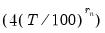

To compute the (possibly row-weighted) long-run covariance matrix of the series in a group, open the Group object and select from the toolbar or main menu. If you wish to compute the results for a particular sample, you should set the workfile sample accordingly.
You may use the dialog to change these settings. The dialog (here we show the dialog for a group object) is divided into three sections. The section is used to describe the covariance that you wish to compute and to specify an output matrix, if desired. The section is used to define pre-whitening or VARHAC options. The section describes the non-parametric kernel settings.
You may instruct EViews to compute a one-sided covariance by changing the dropdown from the default to one of , , , . The “lower” methods only use covariances in which the rows correspond to contemporaneous values and the columns correspond to current and lagged data; the “upper” methods employ covariances where the columns correspond to current values and leads of the data. The “strict” long-run covariances exclude the contemporaneous covariance from the computation.
You may use the checkbox to indicate whether you wish to subtract off means (center your data) prior to computing the kernel covariance estimator. By default, EViews will remove the mean from each series in the group. To compute an uncentered long-run covariance, you should uncheck this box. If you do elect to center the data, you will be prompted for whether the covariance estimates should employ a that accounts for the estimation of the mean values.
In addition, you may provide weights by entering a series expression in the edit field. Row weights are a convenient way of instructing EViews to compute the long-run covariance on data where the series in the group are weighted by a common element. A leading application occurs in the computation of White or Newey-West regression coefficient covariances, where the group contains the regressor data and the weights are the residuals. For example, if you have the regressors series X1, X2, and X3 in your group, and the residuals are in the series RES, entering “RES” in the edit field instructs EViews to compute the long-run covariance of “X1*RES”, “X2*RES”, “X3*RES”.
Lastly, you may elect to save your results in an EViews object. Simply enter a valid EViews object name in the edit field. EViews will save symmetric long-run covariances in a sym object and one-sided covariances in a matrix object.
In panel workfiles, EViews will compute the Phillips and Moon (1999) long-run average covariance matrix obtained by averaging the long-run covariances across cross-sections. You may provide a name in the edit field to EViews to save a matrix containing the individual covariance estimates. Each row will contain the vec or vech of the results matrix for the corresponding cross-section.
The section is used to define options for computing the VAR used in computing VARHAC or pre-whitened kernel estimation.
If you specify one of the automatic methods (, , ), you must specify the maximum number of lags in the edit field. You may provide the actual maximum value, or you may enter “*” to instruct EViews to use an observation-based maximum given by the integer portion of as suggested by Den Haan and Levin (1997).
If you specify a lag specification, you should enter the value in the edit field.
The section is used to define settings for estimation of the long-run covariance of the original or pre-whitened data.
The dropdown is used to define the method for computing the long-run covariance. Choosing tells EViews to compute the long-run covariance using only the contemporaneous covariance. (The VARHAC methodology, for example, uses a combination of pre-whitening and the setting.) The remaining choices specify the shape of the kernel function. There are a large number of pre-defined kernel shapes from which you may choose, as well as the option to provide the name of a custom kernel shape vector.
The bandwidth selection method requires specification of a . You may enter a value for the number of lags in the edit field, or you may specify “*” to use an observation-based value given by the integer portion of  where depends on the properties of the selected kernel shape as given in
“Kernel Function Properties” (see
“Newey-West Automatic Selection” and Newey-West (1994) for discussion).
Both the Newey-West Automatic and the
Andrews Automatic bandwidth selection methods allow you to adjust the chosen bandwidth by an offset, by entering a value in the
Offset edit field. By default the offset is set to zero, which implies no adjustment will take place, however you may enter any positive or negative number to make an adjustment. This can be useful when trying to align the result given by EViews with results which use a different interpretation of the bandwidth. In such cases the most common required offset is a value of “1”.
The bandwidth selection requires that you provide a bandwidth value. Simply enter the value as prompted in the edit field.
First, we need to obtain the residuals. Open EQ_OLS and click on to display the dialog. Enter “RES” for the name of the residuals, then click on to save the regression residuals in the workfile.
We must make a few changes to the default settings. To weight the regressors using the residuals, you must enter “RES” in the edit field. Uncheck the checkbox, since the

should already have mean zero. Then, enter “LRCOV” in the edit fields so that EViews will save the results in a sym matrix object.
The Stock-Watson example uses a Bartlett kernel with no pre-whitening, so we leave the at the default setting and the shape choice at the default . We should, however, change the method to and enter “8” in the edit field to match the 7 lags employed by Stock and Watson. Click on to compute and save the results.


manually using the group long-run covariance view, and will use this estimate to derive the HAC coefficient covariance matrix.
First, we need to obtain the residuals. Open EQ_OLS and click on Proc/Make Residual Series to display the Make Residuals dialog. Enter “RES” for the name of the residuals, then click on OK to save the regression residuals in the workfile.Next, we will compute the symmetric long-run covariance of . Double click on XVARS to open the group containing the regressors, then select View/Long-run Covariance... to display the dialog.We must make a few changes to the default settings. To weight the regressors using the residuals, you must enter “RES” in the Row weights edit field. Uncheck the Remove means checkbox, since the